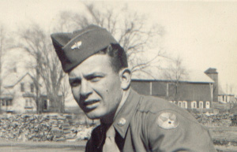
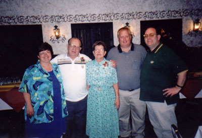

| Lyle Roger Wogsland was born on Nov. 10, 1929, in Nelsonville, Wis., the son of Obert and Alice Wogsland. On July 1, 1951, Lyle was united in marriage to Barbara Carol Willadsen in Crown Point, Ind. He served in the United States Air Force, and was for a time stationed in Japan. He retired on Jan. 1, 1968. |

|
|

Sue, Lyle, Barb, Dennis, Carl |
Thereafter Lyle worked for the Post Office in Madison, WI. He was a lifelong member of the V.F.W. and a member of Burke Lutheran Church. Lyle and Barb had three children, Susan, Dennis and Carl. Lyle died peacefully on Wednesday, 4 February 2004, at the Don and Marilyn Anderson HospiceCare Center following a short bout with cancer. |